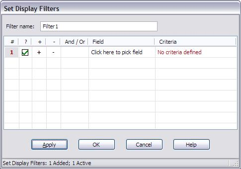

A "filter" is a criteria (or set of criteria) that an entry either matches or doesn't match. PasswordSafe allows you to define filters, and display only those entries that matches a given filter. You can define a filter for a one-time query, or you can define several filters, name them and store them persistently, fo repeated use. Filters may be either stored along with the database, or externally, for sharing the same filter across several databases.
Defining a Filter
To define a new filter, select the View->Filter->New/Edit Filter menu entry. The following dialog box will be displayed:
As you can see, each Filter consists of one or more rows, where each row defines a criteria on a given field. The conditions defined in each row can be either "and" or "or" the condition defined in the previous row. This allows you to define the following kinds of filters:
1. All entries with a username containing "joe" or "Joe" or "JOE":

2. All entries with a username "Joe" (exactly) created after May 1st 2008

3. All entries with a username containing "joe" or "mary"

As you can see, the filters can be arbitrarily complex.
The columns in the Filter table are are follows:
- '#' - This is the row number. It's displayed for convenience, and cannot be modified.
- '?' - The checkbox in this column determines if the row is active or not. Only active rows are used when applying the filter. Clicking on the checkbox enables/disables the row.
- '+' - Click on this to insert a new row below a given row.
- '-' - Click on this to delete the current row. Note: Since deleting a row is permanent, you might wish to disable it instead.
- 'And/Or' - This allows you to determine the relation of the rule you're adding to the previous rule.
- 'Field' - Select the entry field you're interested in, e.g., username, title, group, notes, etc.
- 'Criteria' - Define the value you're interested in for the selected field.